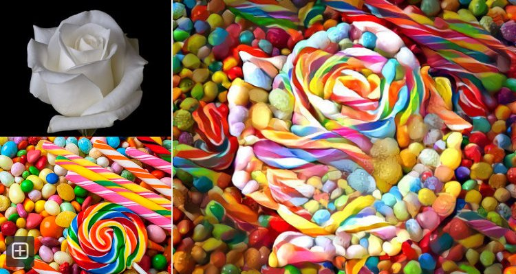
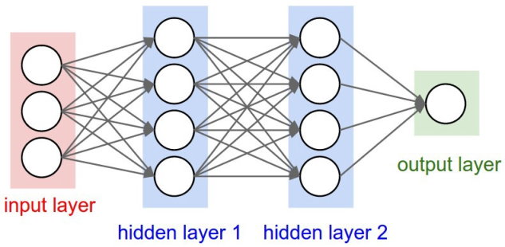
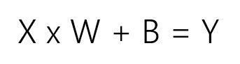
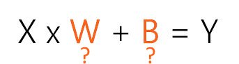
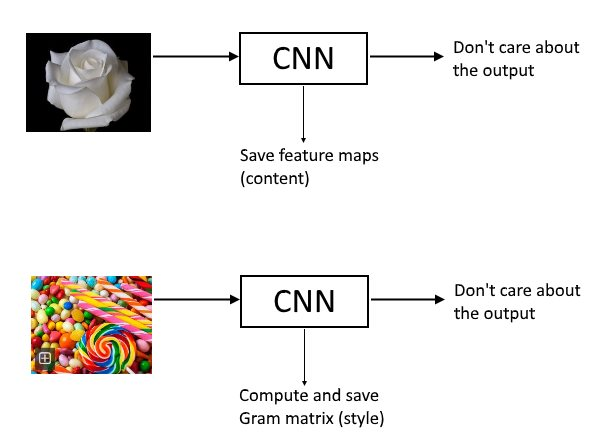
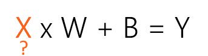
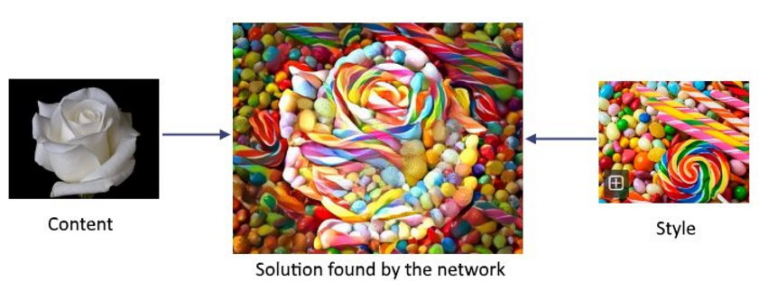
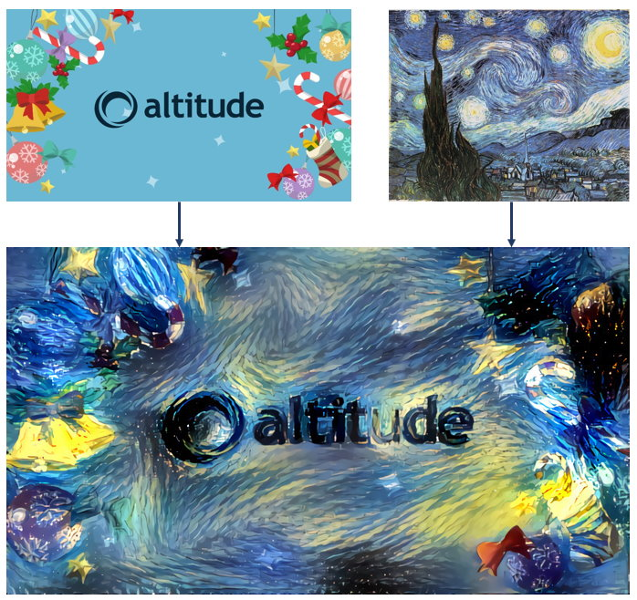

I remember a painting professor I had telling the class: “forget the contours, contours are in your brain, not in reality. Painting is a visual interpretation. You don’t paint a chair, you find a solution, in canvas, for the colors, light and shadows you observe, ignoring if they seem a chair or a train. If you do it right, in the end you’ll get a chair”.
I’m not much of a painter myself, my chairs always ended like trains, so I never knew if he was right or not. Probably was. But I just wonder what he would say about image interpretation – made by machines.
Recently, artificial neural networks (ANNs) began to be used to produce images, some of them beautiful, like this one:

The final image, on the right, was not produced by image filters or morphing algorithms; it was created by a trained ANN specialized in image recognition, called CNN, but used in reverse to combine the content of the upper-left image with the style of the bottom-left image. Ok, that sound strange. I’ll start from the beginning.
What is an artificial neural network?
It’s a computer structure inspired by the biological neural networks. When they were invented, in the mid-20th century, they were described as a computational model of the human brain.
As a diagram, a simple Artificial Neural Network looks like this:

The output is a prediction and can represent a class (“Cat”, “Dog”, “Train”, …) or be just a number (a predicted price for a house, for example).
The input is the data we give to the network to obtain the prediction. For example, the pixels of an image, or data that can influence the price of houses (location, age of the building, etc.).
Inside we have layers of so-called neurons (the white circles). Each neuron receives inputs and uses them to compute an output, a value used as input for other neurons. Each of these connections (the arrows in the diagram) has 2 unique variables, a weight and a bias.
A network would not be of much use without being trained for some purpose. Training consists of feeding the network with lots of labeled data samples. Put another way, we tell the network which output is the right one for the inputs we’re giving (it’s like saying “this image is a dog”, “this image is a cat”, and so on, for millions of images, repeatedly). The network learns by adjusting all the weights and biases a little bit, progressively, so that, given the inputs, the output of the network become closer and closer to the labeled output.
This is a very simplified, undetailed description of an ANN. But yes, in the end the biological-inspired computational model of the human brain is just a big equation. So let’s simplify even more and represent by W all the weights, by B all the bias, by X all the inputs, by Y the output and, for those who like statistics (who doesn’t?), let’s have the entire network represented in the form of a linear regression:

Note that this formula is an oversimplification just to meet the purpose of this post. That said, let’s get back to the Deep Dream.
Neural networks come in different flavors, one of them very good at 2D processing. CNNs, or Convolutional Neural Networks, are special ANNs used by Google Deep Dream and many other image recognition systems, including smartphone apps, to classify images. CNNs use dedicated layers called convolutional layers that decompose the image in feature maps, each one an image itself (representing parts of the image, edges, corners, contours – my painting professor would not like that at all). CNNs are also used for speech recognition, natural language and other complex applications.
But the Deep Dream CNN is not trying to classify anything. How does it get to the final image?
First it is trained in a normal way for image recognition, by adjusting W and B in the equation, given X and Y (corresponding to tons of labeled images):

It was found that during the training procedure, a CNN specialized in image recognition internally represent images in a way that allows for the separation of image content and style. The feature maps determine the content, while a correlation of the feature maps named Gram matrix represents the image style.
So the next step is to feed the “content” and “style” images through the CNN and save the feature maps and the Gram matrix respectively.

Finally, our target will be the “X” in the equation – the input.

That’s what we want to know: given the content and style, what is the best combination of both. The network is used in reverse to find it. Instead of adjusting W and B, it will be adjusting X, the input image, that starts as white noise, in small steps until it is sufficiently close to the desired content and style.
Because the style image and the content image will never match, the network is forced to create a solution, let’s say its unique interpretation of the challenge.

This technique is called “deep art” because, taking a tolerant definition of “art”, it results in art achieved through deep learning methods. You can read about it here and here, or just go to Deep Dream web page or download the Prisma app and try for yourself.
But enough of geeky stuff. Returning to art, the “Loving Vincent” movie, released last year, is an animation where more than 800 oil paintings in Van Gogh style, painted during 6 years by a team of 125 professional artists, were used to create the 65000 frames of the movie. Without diminishing this tremendous work and the invaluable human creativity, maybe the next movie of this kind can already be produced using deep learning techniques.
This is the first of a series of posts on deep learning. In “Deep Van Gogh” style, thanks to Google Deep Dream,
Happy new year to all (including machines)
